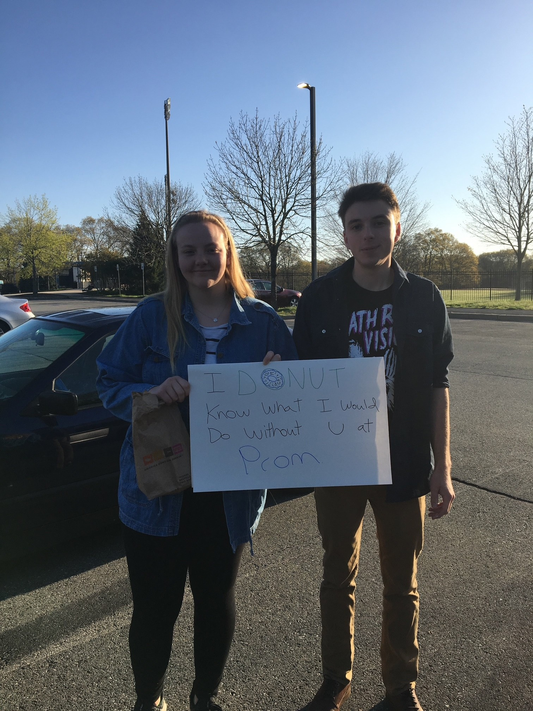

I know this seems like a weird place to meet, but given the circumstances of going to high school together and having assigned parking spots, the odds are better than you might think. We had mutual friends, parked next to each other, and eventually became part of each other’s everyday routine. There was some questionable parking commentary, a few broken car mirrors, and eventually Liam started walking into school with Alyssa every day. Somewhere along the way, it became less about the parking spots and more about each other.